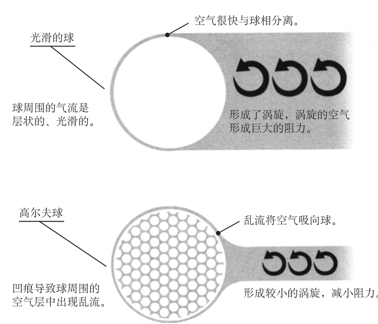

21 高尔夫球表面为什么有凹痕
数学概念：物理学、几何学
当你看到泰格·伍兹在美国公开赛上开球的时候，一定想不到他的球能在空中飞过，是因为得到了数学的帮助。可事实的确如此，这要感谢高尔夫球上的凹痕。
几百年前，高尔夫球是木制或橡胶制的，表面是完全光滑的，奇怪的是，高尔夫球运动员发现，用得久、变旧、凹痕多的球，飞得比光滑的新球更远。后来，科学家发现，这是因为球表面的凹痕让周围的空气更贴近它的弧线，从而减少了产生阻力的乱流。传统上，高尔夫球的凹痕是圆的，但一种新的高尔夫球的凹痕变成了六边形。它的生产商卡拉威称，六边形的凹痕能覆盖更多的球面，这样平滑的面积减少了，空气阻力也随之减小。

凹痕
高尔夫球大小不同，大部分有300～500个凹痕，常见的有336个凹痕。